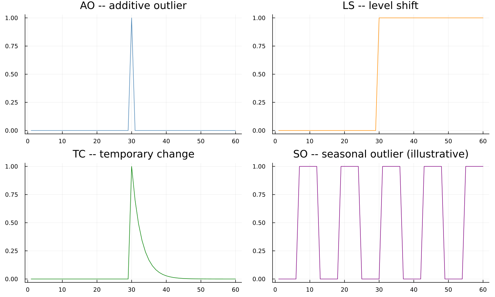
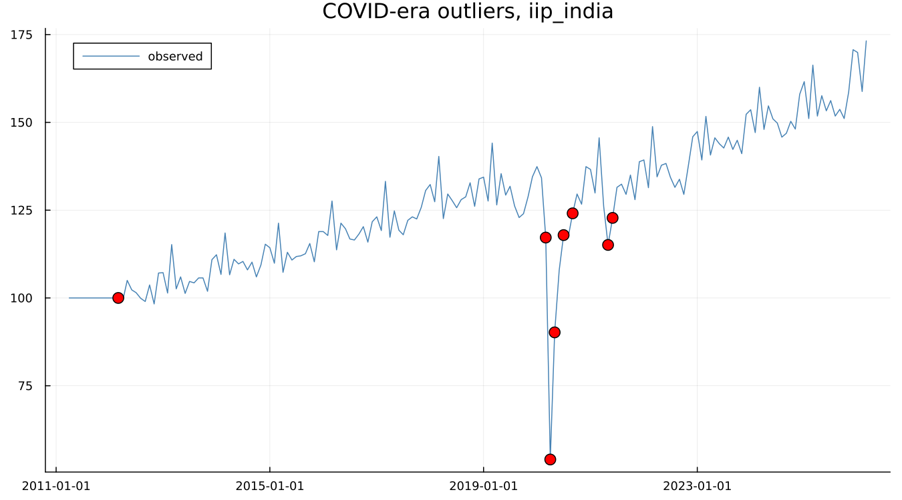

12. Outliers and Interventions
12.1 Four shapes
RegARIMA recognises a small family of intervention shapes, worth seeing as pictures before reading their definitions:

An additive outlier (AO) affects a single observation and nothing else. A level shift (LS) moves the series permanently to a new level from that point forward. A temporary change (TC) spikes and then decays back toward the original level over a few periods. A seasonal outlier (SO) — shown here schematically — affects one calendar position's seasonal pattern specifically, an intervention type not part of every regARIMA implementation. The distinction that matters most in practice is between the first two: an AO is a one-month blip, an LS is permanent, and treating one as the other misreads the series' actual behaviour going forward.
12.2 Finding them automatically
Detection works by iterative t-testing against a critical value that depends on series length — larger series test more values, and the threshold adjusts accordingly. On the canonical airline spec:
AO1951.May: coef 0.100156, se 0.020439, t = 4.900
counts: ao 1, ls 0, tc 0, so 0, total 1Worth making explicit: this outlier is not visible in the levels. The surrounding raw values are 163, 172, 178 for April, May and June — nothing jumps out to the eye. Detection runs on regARIMA residuals after differencing, comparing what the fitted model expected against what actually happened, not on the raw series itself. Getting Started chapter 4 first raised this fact; this is where the mechanism behind it is explained.
12.3 A real case
iip_india carries a genuine, dramatic signature — already flagged in this dataset's own provenance notes, and confirmed directly here by actually running outlier detection rather than assumed from the raw numbers alone:

Eight outliers total, heavily clustered around one event: LS2020.Mar (a level shift beginning the month India's COVID lockdown started), AO2020.Apr and AO2020.May (the two months of the sharpest actual drop — April 2020 reads 54.0 against a March 2020 reading of 117.2, the single largest month-over-month move anywhere in the series), LS2020.Jul and LS2020.Sep (further level adjustments as activity partially recovered), and AO2021.May/AO2021.Jun (a second, smaller disruption consistent with India's 2021 COVID wave). This is not a constructed example — it is what automatic detection finds on a real series, unprompted, at exactly the dates an independent reader would expect a real economic shock to appear.
12.4 When not to trust the detection
Detection near the very end of a series is unreliable. There is not yet enough subsequent data to distinguish a temporary blip from the start of a permanent shift, so a level shift flagged in the last few months of a series is provisional — it may be reclassified, or vanish entirely, once more data arrives. This is easy to forget in practice and worth stating plainly: an outlier near the end of a freshly adjusted series deserves more scepticism than one comfortably in the interior.
Keep this clearly separate from X-11's own extreme-value handling (Chapter 8). X-11 downweights an unusual observation inside the filter, silently, and leaves no explicit record beyond the replaced value. A regARIMA outlier, covered in this chapter, is estimated as an actual regression coefficient with a reported standard error, and can be inspected, questioned, or removed directly. Both exist in a full X-13 run; they do different jobs, and treating them as the same mechanism is a common and avoidable confusion.
See also: Chapter 8 for X-11's own, different extreme-value mechanism. Chapter 19 for what an unflagged problem in the residuals looks like instead of an outlier.